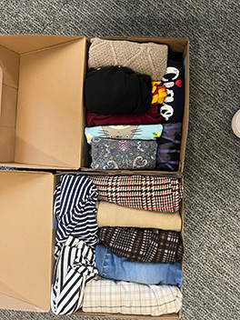
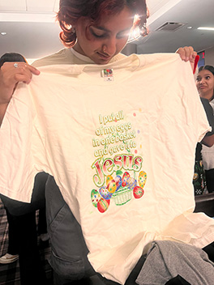
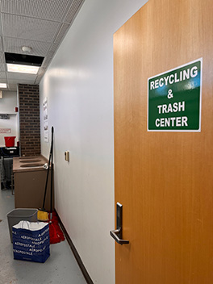

Week Twelve:
The Lethal Laundry
Preface
Why document trash, you may ask? That’s a valid question. In a world filled with beautiful sights and sounds, placing a spotlight on the drab and discarded items that lay in the wastebin seems absurd. From an outsiders’ perspective, I would agree. However, this documentation of garbage is extremely personal. In its most basic sense, it holds me accountable for the items I dispose of and my unnecessary waste; should I really throw out that extra French toast? Do I really need to use plastic water bottles when I have reusable ones right beside me? This project also keeps me conscious of the clutter that accumulates in my room; why keep an empty ChapStick? Why not recycle those old flyers? Some of the most mundane items appear to hold significant meaning in my life.
This brings me to my next point: sentimentality. I am a person who gets very emotionally attached to just about anything. If it is in the slightest way important to me, I will hoard it until the ends of time. While I think it is viable to retain certain items of value, I know that there are many pieces of my collection that I will not miss if I get rid of them. For example, I continue to keep ill-fitting clothing in my wardrobe in hopes that one day it may finally fit again, which I know is a very slim chance. I save hair accessories that go unused because they were a gift from a family member. These small decisions start to add up, and lead to disorganization, stress, and a cramped lifestyle. I am actively aiming to fix that. It starts small; getting rid of little items here and there. Of course, there are some things that need to be tossed along the way, like empty boxes and such. However, I hope that by participating in this project, I can gain a better sense of need versus want. I hope to not only help myself in this endeavor, but inspire others as well through documenting trash as an art form.
Weekly Overview
This week in particular sparked many moments of reflection compared to other weeks. My trash put into perspective just how much I carry with me, physically and emotionally. As a very sentimental individual, I keep objects based on their emotional value (for example, if it was a birthday gift or if I have had it for a long time). I also keep things “just in case” I ever intend to use them again, which I rarely do. As a result, my room becomes very untidy. I tend to find that when my environment is cluttered and disorganized, I end up feeling the same way. This week encouraged me to rummage through my belongings and ask myself what truly mattered in my life.
Moreover, this week was also an opportunity of learning and appreciating what I already have. I tend to be a clumsy, forgetful person a lot of the time. I find that I frequently ignore certain precautions due to sheer laziness or the assumption that things will go my way. This week demonstrated that this is simply not the case, and that there are consequences to my actions. For example, not restocking on laundry sheets before they run out, forgetting to check my pants pockets before I run the washing machine, or constantly dropping my phone. All of these little moments lead to unnecessary stress that can be easily avoided with a bit of forward thinking.
The Laundry Incident:
There are only two items in this category, a container of Vaseline lip therapy and an empty box of Bounce dryer sheets. Allow me to paint the scene: it is 12 PM on a Friday in February, and you decide to do your laundry. You start by putting a load in the washing machine (you do not bother to check your pants pockets as your normally do). When the load is done, the clothes are sopping wet, as if they did not go through the spin cycle to rid of the excess water. In an attempt to really ensure your clothes dry, you separate them into two separate loads, put them in individual dryers, insert your final two dryer sheets, and set it at high temperature. Unfortunately, because this is Rutgers, the timer is set to 45 minutes instead of the usual 1 hour. To your disappointment, not only are your clothes still damp upon completion, but it appears a rogue container of Vaseline lip therapy was left in your pockets and managed to stain your sweatshirt and sweatpants. On top of that, you have other errands to run, so the clothes are left to sit damp in a pile. When you return, there is nothing else to do but unfortunately do the whole cycle again, this time praying that your clothes dry.
This is how these two items came to be in this week’s trash: a lack of urgency and forethought. Although the Vaseline lip therapy, purchased on Amazon just 2 months ago, still contained some product, I could not trust to keep it. I worried that with the heat of the dryer, some of the plastic of the container may have melted and contaminated the balm itself. As for the empty box of dryer sheets, it served as a reminder to order new ones in advance instead of waiting till the very last minute. This was the most notable learning experience this week.
Outdated:
The outdated category describes items that are no longer usable because they have, in a sense, expired. In this week’s case, I had a stack of flyers from my club, The Rutgers Review, that was created for the Fall 2023 semester. I printed them at the Academic Building on College Ave around November, as that is when our club realized that membership was quite low and needed some advertising. However, since then, we have updated our slogan, meeting place, and overall aesthetics. Thus, the old flyers were obsolete and needed to go. Similarly, I had a stack of old resumes from Fall 2023 that I used at career fairs. I also printed these at the Academic Building, but back in September. With the Fall Career Fair being the first I ever attended; I was quite nervous. That is partially why I over-printed my resumes and kept most to myself – I was too anxious to talk to recruiters and give it to them. While most of the information on these papers holds true now, some parts of my resume have changed, such as GPA, relevant coursework, and technical skills. As a result, I no longer have a use for them.
On the Brink of Death / Why Do I Still Have This?
Items in this category, “On the Brink of Death / Why Do I Still Have This?” are things that have either completely broken down or are just straight trash that I have for some reason held on to. The first item is my Burt’s Bees Tinted Lip Balm: my prized position. I bought this lip balm roughly 1-2 years ago, most likely from CVS or Walgreens. As someone with sensitive skin and dry lips, I am always in the market for a balm. When I saw this tube in particular, I was really excited to have a product that moisturized my lips and tinted them! However, after using it nearly every single day, it has run its course. I have held onto it thinking that I can still scrape the product out of the sad little tube, but the truth is that I cannot. So, she has to go. Another item in this category is a box for Brooklyn&Bailey’s “Lash Next Door” mascara. I have been using this makeup product also for about 2 years now, mainly because it competes really well against other brands in the market. This specific box held a mascara in it I bought about 2 months ago, yet for some reason, I decided to keep the box (even though the mascara tube does not need it). So, the container has now been disposed of). Lastly, I have my clear OtterBox phone case. It may not be obvious from the looks of the picture, but it is in really rough shape. There is sticker residue on the corner, separation of the case itself, scratches all over the back, and it has generally yellowed. I bought this case and an additional identical one on Amazon back in Spring 2023. I had originally purchased them for my partner and I, so that we could put matching photos inside the case. Clearly, it did not last very long. So, in the trash it went (after I ordered a replacement).
Unnecessary
This section is dedicated to objects that have little value to me because I will never use it, and yet I have kept them anyways. The first item is a pamphlet I received at a career fair for the US Navy – I have not looked at it once since that day and do not plan to anytime soon. Another item that fits this category is a phone card sleeve with “WRSU 88.7 FM Rutgers Radio” printed on it. I was given this for free in Fall 2022 during the Involvement Fair, and have never used it. To be fair, it is a very useful item, however I have no need for it. I already have a wristlet where I put all my cards, and I personally like to show off my phone case, not cover it. As a result, I have decided to get rid of it.
Gallery
Burt's Bees Lip Balm
Phone Card Sleeve
Bounce Dryer Sheets
The Rutgers Review Flyers
Otterbox Clear Phone Case
Navy Pamphlet
Fall 2023 Resumes
Vaseline Lip Therapy
Lash Next Door Mascara
Item Data
| Item | Weight | Source | Location | Cost | Time Owned | Mode | Reason for Disposal |
|---|---|---|---|---|---|---|---|
| Clear OtterBox Phone Case | 0.70 oz | Amazon | On my phone | $15 | 1 year | Trash | Worn Out |
| Burt’s Bees Tinted Lip Balm | 0.15 oz | Pharmacy | Bedroom | $3 | 2 years | Trash | Completely Used Up |
| Lash Next Door Box | 0.10 oz | Lashnextdoor.com | Desk drawer | $18 | 2 months | Recycling | Do not need the box |
| US Navy Pamphlet | 0.30 oz | Career and Internship Megafair | Desk Drawer | Free | 5 months | Recycling | I am not joining the US Navy |
| Phone Card Sleeve | 1.00 oz | Involvement Fair | Desk Drawer | Free | 1 ½ years | Giving to a friend | I don’t use card sleeves on my phone |
| Old Resumes | 0.75 oz | Academic Building | Desk Drawer | $1.20 | 6 months | Recycling | Outdated |
| The Rutgers Review Flyers | 0.75 oz | Academic Building | Desk Drawer | $0.40 | 3 months | Recycling | Outdated |
| Vaseline Lip Therapy | 0.25 oz | Amazon | $3.00 | 2 months | Trash | Ran through washer and dryer by accident | |
| Bounce Dryer Sheet Box | 3.00 oz | Shoprite | Closet | $5.00 | 5 months | Recycling | Empty from using all dryer sheets |
Item of the Week: Vaseline Lip Therapy
I have selected this item in particular because of how useful it was to me, despite its short time being here. Over the course of this winter, I found that my lips were getting especially dry and cracked more than ever before. Regular lip balms like ChapStick just were not cutting it – I needed something stronger. After doing some research, I found that a lot of people recommended the Vaseline Lip Therapy (including my roommate), as its formula is very hydrating and creates a barrier that prohibits moisture from the outside to touch the skin. Lip balms have actually been around since 40 B.C. during the time of the Ancient Egyptians, however these concoctions mainly consisted of beeswax, olive oil, animal fats, and other natural ingredients. Vaseline Lip Therapy is made up of petrolatum, butyrospermum parkii (shea) butter, and tocopheryl acetate. Evidently, the lip balm world has changed since 40 B.C. In fact, petroleum jelly was only introduced for lip products in 1870 – over a thousand (nearly two) years later than the inception of lip balms! Now of course, this type of revolution can have positives and negatives. For me, the product worked wonders. However, many lip products today contain unrefined petroleum jelly, which harbors carcinogens such as polycyclic aromatic hydrocarbons (PAHs) that are linked to different types of cancers. So… it seems that I should research my lip products before I use them!
Moreover, this specific tub of Vaseline was also a lip tint, so it doubled as skin protection and makeup. I used it nearly every single day until its demise. When I noticed that it had went missing a few days ago, I was distraught, but I figured it would show up sooner or later. What I did not expect was where it would show up: in my laundry. Alas, it was the end of the line for my trusty Lip Therapy. Thankfully, I have two other tubs of different flavors (?) that will work in the meantime. However, nothing can live up to the joy that the pink Vaseline Lip Therapy provided me.
Three Reasons I Loved This Item
- It actually moisturized my lips.
- It gave me a pink tint!
- It was compact and easy to bring on the go!
Coda
Thank you for reading Week 12 of Trash of the Week. I hope these items, my stories, and this website overall inspire you to take some control in your life. Whether it is looking into ways that you can combat climate change, working to declutter your space, or just looking to have a good time, Trash of the Week is the page for you. Feel free to message me @ambersafe.er on Instagram for any questions or to chat! I would love to hear about how my site has impacted you, and what I can do to improve it. Looking forward to next week!

A "Free Little Library" found down the street from my house, near a park.

The mail room on College Avenue Campus, where I ship off clothes when I sell them on Depop.
A box full of clothes at the Honors College for the Thrift Swap event.
Having fun at said Thrift Swap event.
The trash and recycling room at my building, Hardenbergh Hall.
Trash Familiar Profile
A solemn, lonesome empty can of Spindrift.
This is an opened can of lime Spindrift, a zero-calorie, zero-sugar, two-ingredient sparkling water. It can be seen here sitting on the windowsill of my partner's suite, looking out to the Crosby and Winkler Suites on Busch campus. My boyfriend and his roommate are Spindrift addicts -- not a day goes by that I don't see a can in hand or placed hapazardly on desks and dressers. This one in particular though sticks out to me, as it has yet to be moved from its place on the windowsill. It is completely empty, down to the drop, and yet it remains next to my boyfriend's roommate's (unpictured) empty fanta bottles, catcus, and lego sculptures. It is almost as if it is an artistic form in itself, a decoration of the room and a way to declare my partners' love for Spindrift. I admire that, and so long as no mold grows, I think his preserving of that can is beautiful.